Repères du catalogue
Cent cinq gilets tactiques, de six à vingt-huit emplacements : le rig ne protège pas, il transporte. Sa valeur tient dans ce qu'il permet d'emporter et dans ce qu'il coûte en mobilité.
105
Gilets tactiques. Cent cinq gilets tactiques dans l'export du 18 novembre 2026, de 0,22 à 12,2 kilos.
1 – 6
Classes présentes. De la classe 1 à la classe 6 pour les pièces qui intègrent un blindage.
3
Matériaux. Aramid pour la grande majorité ; titane et UHMWPE pour quelques pièces.
Un rig n’est pas une classe de protection. Le rig porte les poches, les emplacements et les sacs. La classe d'un gilet tactique tient à son matériau et à ses zones, pas à sa capacité de rangement : un rig très blindé reste un porteur, et un porte-plaques très capace reste un porteur.
Le modèle de protection
Le rig se lit sur trois lignes : la capacité de rangement, la géométrie des poches et le poids. Les deux dernières ne se déduisent pas de l'export, et la première ne dit rien de l'agencement.
| Couche | Ce qu’elle mesure | Où la lire |
|---|---|---|
| Zone | La partie du corps touchée par un tir. Une pièce couvre un ensemble de zones ; le jeu calcule zone par zone. | Colonne Zones du catalogue |
| Classe | La capacité d'une matière à arrêter une munition, de 1 à 6. Elle appartient à la plaque ou à l'armure souple. | Colonne Classe du catalogue |
| Durabilité | La résistance totale de la pièce avant qu'elle ne cède. Chaque impact en retire une part liée au matériau. | Colonne Durabilité du catalogue |
| Mobilité | Le poids et les pénalités de vitesse, de rotation et d'ergonomie, qui s'ajoutent aux vôtres. | Colonnes Poids et Prix de base du catalogue |
La règle de pénétration appliquée par le jeu depuis le correctif 0.14.6.0 du 25 avril 2024 est détaillée sur la page balistique.
Les huit matériaux
La matière détermine la destructibilité, c’est-à-dire la part de sa résistance qui part à chaque impact, et l’usure appliquée lors d’une réparation. Les deux valeurs viennent de l’export : elles sont identiques pour toutes les pièces d’un même matériau.
| Matériau | Destructibilité | Usure (réparation) | Usure (kit de réparation) |
|---|---|---|---|
| Aramid | 0.1875 | 3 % – 7 % | 2 % – 6 % |
| UHMWPE | 0.3375 | 1 % – 3 % | 0 % – 2 % |
| Matériau combiné | 0.375 | 10 % – 15 % | 9 % – 14 % |
| Titane | 0.4125 | 6 % – 10 % | 6 % – 9 % |
| Aluminium | 0.45 | 6 % – 10 % | 6 % – 9 % |
| Acier de blindage | 0.525 | 1 % – 3 % | 0 % – 2 % |
| Céramique | 0.6 | 17 % – 22 % | 16 % – 20 % |
| Verre | 0.6 | 23 % – 42 % | 21 % – 38 % |
La colonne Réparation donne la perte de résistance entre la version neuve et la version réparée. Un matériau peu destructible mais très usé se répare mal : c’est le compromis du titane et de l’aluminium.
Les six classes
La classe va de 1 à 6. Elle décrit la matière, pas la pièce entière : une plaque de classe 6 montée dans un gilet de classe 2 protège autant que la plaque, pour les zones que la plaque couvre.
| Classe | Pièces | Durabilité | Matériaux dominants |
|---|---|---|---|
| Classe 1 | 2 | 180 – 180 | Aramid |
| Classe 2 | 4 | 68 – 68 | Aramid |
| Classe 3 | 6 | 70 – 160 | Aramid, Titane |
| Classe 4 | 23 | 86 – 222 | Aramid, Titane |
| Classe 5 | 19 | 110 – 440 | Aramid, UHMWPE |
| Classe 6 | 5 | 110 – 414 | Aramid, UHMWPE |
| Sans classe | 46 | — | Gilet tactique |
Les pièces sans classe ne sont pas des pièces sans blindage : ce sont les accessoires dont la catégorie n’implique pas de protection chiffrée, comme une visière ou une protection auditive.
Les cent cinq gilets tactiques
Les rigs de l'export, avec leur capacité de rangement, leur poids et leur prix de base. Le filtre porte sur la classe, le matériau et le poids maximal.
| Image | Pièce | Classe | Matériau | Durabilité | Zones | Poids (kg) | Emplacements à plaques | Prix de base (₽) |
|---|---|---|---|---|---|---|---|---|
 | Gilet tactique porte-plaques Crye Precision AVS (Ranger Green)Gilet tactique | 4 | Aramid | 212 | 6 | 2,88 kg | 2 / 5 | 58 629 ₽ |
 | Gilet tactique BlackRock (gris)Gilet tactique | — | — | — | 0 | 1,80 kg | 0 / 0 | 40 700 ₽ |
 | Gilet de scavGilet tactique | — | — | — | 0 | 0,40 kg | 0 / 0 | 4 199 ₽ |
 | Gilet tactique UMTBS 6Sh112 Scout-Sniper (Digital Flora)Gilet tactique | — | — | — | 0 | 1,70 kg | 0 / 0 | 21 423 ₽ |
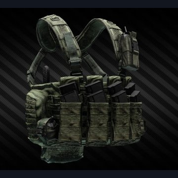 | Gilet Tactique ANA Tactical Alpha (Olive Drab)Gilet tactique | — | — | — | 0 | 1,70 kg | 0 / 0 | 42 881 ₽ |
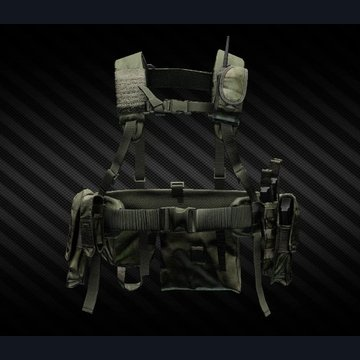 | Gilet tactique WARTECH TV-109 + TV-106 (A-TACS FG)Gilet tactique | — | — | — | 0 | 1,80 kg | 0 / 0 | 14 252 ₽ |
 | Gilet tactique WARTECH MK3 TV-104 (MultiCam)Gilet tactique | — | — | — | 0 | 1,65 kg | 0 / 0 | 36 958 ₽ |
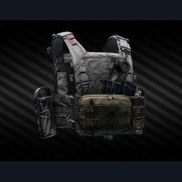 | Gilet tactique porte-plaques ANA Tactical M2 (Digital Flora)Gilet tactique | 4 | Aramid | 206 | 10 | 2,25 kg | 4 / 8 | 51 362 ₽ |
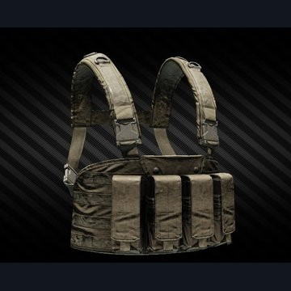 | Harnais tactique BlackHawk! Commando (Desert Tan)Gilet tactique | — | — | — | 0 | 1,35 kg | 0 / 0 | 28 618 ₽ |
 | Gilet tactique porte-plaques 5.11 Tactical TacTec (Ranger Green)Gilet tactique | 5 | Aramid | 170 | 4 | 2,35 kg | 2 / 4 | 52 398 ₽ |
 | Gilet tactique pare-balles 6B5-16 Zh-86 Uley (kaki)Gilet tactique | 3 | Titane | 160 | 7 | 7,10 kg | 0 / 4 | 39 044 ₽ |
 | Gilet tactique pare-balles 6B5-15 Zh-86 Uley (Flora)Gilet tactique | 4 | Aramid | 110 | 7 | 12,20 kg | 0 / 4 | 51 139 ₽ |
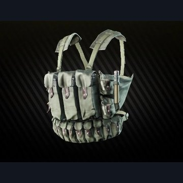 | Gilet tactique Poyas-A + Poyas-BGilet tactique | — | — | — | 0 | 1,70 kg | 0 / 0 | 41 325 ₽ |
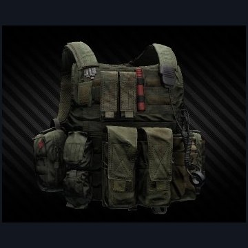 | Gilet tactique pare-balles ANA Tactical M1 (Olive Drab)Gilet tactique | 4 | Aramid | 194 | 10 | 2,95 kg | 4 / 8 | 38 032 ₽ |
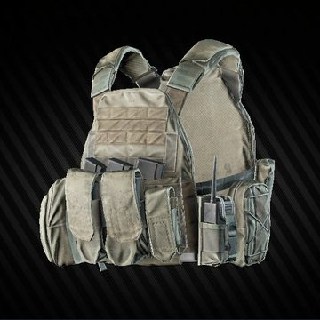 | Gilet tactique porte-plaques WARTECH TV-110 (Coyote)Gilet tactique | 4 | Aramid | 160 | 4 | 3,50 kg | 2 / 4 | 26 042 ₽ |
 | Harnais tactique Blackhawk! Commando (noir)Gilet tactique | — | — | — | 0 | 1,35 kg | 0 / 0 | 28 618 ₽ |
 | Harnais tactique Dynaforce Triton M43-A (noir)Gilet tactique | — | — | — | 0 | 1,30 kg | 0 / 0 | 23 822 ₽ |
 | Gilet tactique pare-balles 6B3TM-01 (kaki)Gilet tactique | 4 | Titane | 86 | 6 | 8,20 kg | 0 / 4 | 44 420 ₽ |
 | Harnais tactique Haley Strategic D3CRX (Ranger Green)Gilet tactique | — | — | — | 0 | 0,90 kg | 0 / 0 | 31 600 ₽ |
 | Gilet tactique porte-plaques Ars Arma A18 Skanda (MultiCam)Gilet tactique | 4 | Aramid | 186 | 8 | 2,45 kg | 4 / 8 | 25 718 ₽ |
 | Gilet tactique SOE Micro Rig (MultiCam)Gilet tactique | — | — | — | 0 | 0,80 kg | 0 / 0 | 9 600 ₽ |
 | Gilet tactique Velocity Systems MPPV (Wolf Grey)Gilet tactique | — | — | — | 0 | 1,60 kg | 0 / 0 | 43 296 ₽ |
 | Gilet tactique Spiritus Systems Bank Robber (MultiCam noir)Gilet tactique | — | — | — | 0 | 0,70 kg | 0 / 0 | 8 200 ₽ |
 | Gilet tactique Splav Tarzan M22 (Smog)Gilet tactique | — | — | — | 0 | 1,45 kg | 0 / 0 | 19 200 ₽ |
 | Gilet tactique porte-plaques Ars Arma CPC MOD.1 (A-TACS FG)Gilet tactique | 5 | Aramid | 240 | 8 | 2,75 kg | 4 / 8 | 68 990 ₽ |
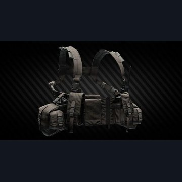 | Gilet tactique LBT-1961A (MAS Grey)Gilet tactique | — | — | — | 0 | 1,36 kg | 0 / 0 | 38 250 ₽ |
 | Gilet tactique compact Direct Action Thunderbolt (Shadow Grey)Gilet tactique | — | — | — | 0 | 0,62 kg | 0 / 0 | 25 160 ₽ |
 | Gilet tactique artisanal IDEAGilet tactique | — | — | — | 0 | 0,22 kg | 0 / 0 | 5 000 ₽ |
 | Gilet de sécuritéGilet tactique | — | — | — | 0 | 0,51 kg | 0 / 0 | 3 900 ₽ |
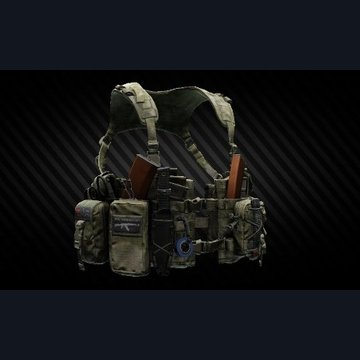 | Gilet tactique Gear Craft GC-BSS-MK1Gilet tactique | — | — | — | 0 | 1 kg | 0 / 0 | 30 015 ₽ |
 | Gilet de chasseur Umka М33-SET1Gilet tactique | — | — | — | 0 | 1,20 kg | 0 / 0 | 25 700 ₽ |
 | Gilet tactique CSAGilet tactique | — | — | — | 0 | 0,75 kg | 0 / 0 | 10 242 ₽ |
 | Harnais tactique Azimut SS Zhuk (noir)Gilet tactique | — | — | — | 0 | 1,60 kg | 0 / 0 | 30 148 ₽ |
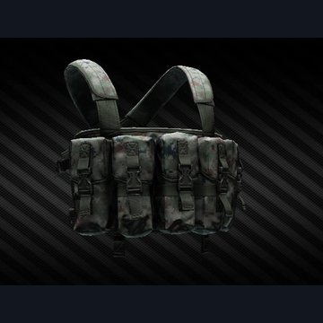 | Harnais tactique Azimut SS Zhuk (SURPAT)Gilet tactique | — | — | — | 0 | 1,60 kg | 0 / 0 | 30 148 ₽ |
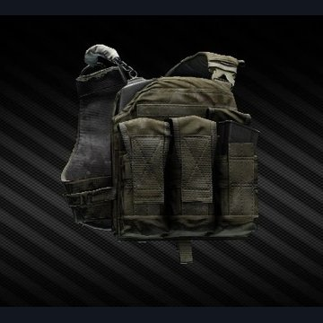 | Gilet tactique porte-plaques Crye Precision AVS (édition Tagilla)Gilet tactique | 6 | Aramid | 170 | 4 | 1,98 kg | 2 / 4 | 49 903 ₽ |
 | Gilet tactique porte-plaques CQC Osprey MK4A (Protection, MTP)Gilet tactique | 5 | Aramid | 272 | 14 | 6,90 kg | 4 / 11 | 82 278 ₽ |
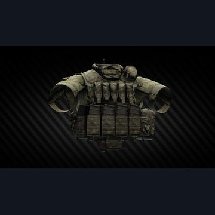 | Gilet tactique porte-plaques CQC Osprey MK4A (Assaut, MTP)Gilet tactique | 4 | Aramid | 222 | 14 | 6,40 kg | 4 / 11 | 49 216 ₽ |
 | Gilet tactique Stich Profi MK2 (Assaut, A-TACS FG)Gilet tactique | — | — | — | 0 | 1,75 kg | 0 / 0 | 33 750 ₽ |
 | Gilet tactique Stich Profi MK2 (Reconnaissance, A-TACS FG)Gilet tactique | — | — | — | 0 | 1,40 kg | 0 / 0 | 32 400 ₽ |
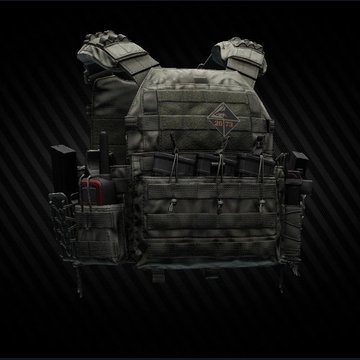 | Gilet tactique porte-plaques Eagle Industries MMAC (Ranger Green)Gilet tactique | 4 | Aramid | 144 | 8 | 2,83 kg | 4 / 8 | 22 059 ₽ |
 | Gilet tactique porte-plaques FirstSpear Strandhogg (Ranger Green)Gilet tactique | 4 | Aramid | 198 | 9 | 3,20 kg | 4 / 9 | 36 118 ₽ |
 | Gilet tactique porte-plaques S&S Precision PlateFrame (édition sbire)Gilet tactique | 5 | UHMWPE | 120 | 4 | 1,32 kg | 4 / 4 | 50 398 ₽ |
 | Gilet tactique porte-plaques Crye Precision CPC (édition sbire)Gilet tactique | 5 | Aramid | 230 | 8 | 3,70 kg | 4 / 8 | 68 779 ₽ |
 | Harnais tactique LBT-1961A (édition sbire)Gilet tactique | — | — | — | 0 | 1,36 kg | 0 / 0 | 49 000 ₽ |
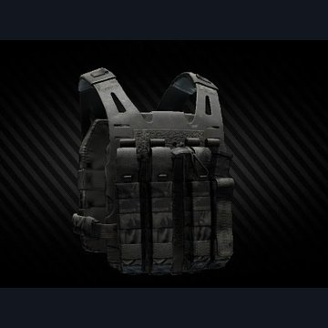 | Gilet tactique porte-plaques Tasmanian Tiger SK (MultiCam noir)Gilet tactique | 6 | UHMWPE | 110 | 2 | 1,50 kg | 2 / 2 | 24 148 ₽ |
 | Gilet tactique pare-balles NPP KlASS BagariyGilet tactique | 5 | Aramid | 232 | 10 | 5,10 kg | 4 / 8 | 51 684 ₽ |
 | Gilet tactique porte-plaques ECLiPSE RBAV-AF (vert Ranger)Gilet tactique | 4 | Aramid | 218 | 9 | 2,65 kg | 4 / 9 | 34 271 ₽ |
 | Harnais tactique Azimut SS "Khamelion" (Olive)Gilet tactique | — | — | — | 0 | 1,70 kg | 0 / 0 | 50 000 ₽ |
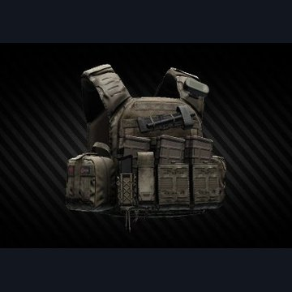 | Gilet tactique porte-plaques Shellback Tactical Banshee (A-TACS AU)Gilet tactique | 4 | Aramid | 152 | 8 | 3,08 kg | 4 / 8 | 24 760 ₽ |
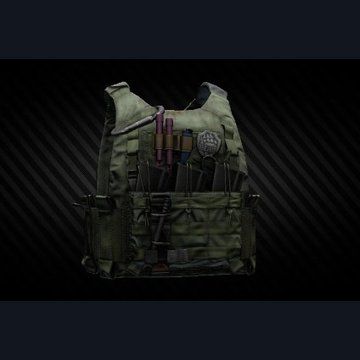 | Gilet tactique porte-plaques WARTECH TV-115 (Olive Drab)Gilet tactique | 3 | Aramid | 122 | 4 | 1,02 kg | 2 / 4 | 8 772 ₽ |
 | Gilet tactique porte-plaques Eagle Allied Industries MBSSGilet tactique | 3 | Aramid | 70 | 2 | 1,33 kg | 2 / 2 | 16 094 ₽ |
 | Gilet tactique Zulu Nylon Gear M4 Reduced Signature (Ranger Green)Gilet tactique | — | — | — | 0 | 0,52 kg | 0 / 0 | 8 066 ₽ |
 | Harnais tactique Chicom Type 56Gilet tactique | — | — | — | 0 | 0,65 kg | 0 / 0 | 9 341 ₽ |
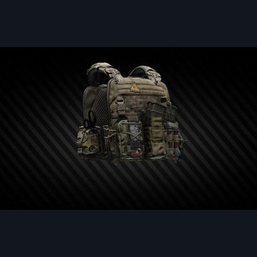 | Gilet porte-plaques Stich Profi Stich Defense mod.2 (MultiCam)Gilet tactique | 6 | Aramid | 220 | 8 | 2,71 kg | 4 / 8 | 53 592 ₽ |
 | Gilet porte-plaques Tasmanian Tiger MKIII (Coyote Brown)Gilet tactique | 5 | Aramid | 110 | 2 | 3,08 kg | 2 / 2 | 22 155 ₽ |
 | Gilet porte-plaques Stich Profi V2 (noir)Gilet tactique | 4 | Aramid | 198 | 9 | 2,20 kg | 4 / 9 | 34 041 ₽ |
 | Gilet tactique Spiritus Systems Bank Robber (MultiCam Alpine)Gilet tactique | — | — | — | 0 | 0,70 kg | 0 / 0 | 8 200 ₽ |
 | Gilet tactique ANA Tactical Alpha (MultiCam)Gilet tactique | — | — | — | 0 | 1,70 kg | 0 / 0 | 64 322 ₽ |
 | Gilet tactique BlackRock (kaki)Gilet tactique | — | — | — | 0 | 1,80 kg | 0 / 0 | 54 945 ₽ |
 | Gilet tactique porte-plaques Crye Precision AVS (MultiCam)Gilet tactique | 4 | Aramid | 212 | 6 | 2,88 kg | 2 / 5 | 58 629 ₽ |
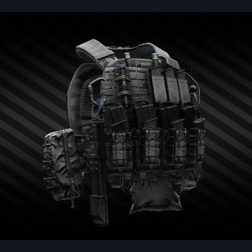 | Gilet tactique porte-plaques 5.11 Tactical TacTec (Storm)Gilet tactique | 5 | Aramid | 170 | 4 | 2,35 kg | 2 / 4 | 52 398 ₽ |
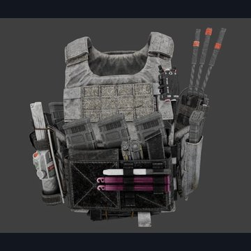 | Spiritus Systems LV-119 Plate Carrier (Black Division V1)Gilet tactique | 6 | Aramid | 220 | 6 | 3,90 kg | 2 / 6 | 86 352 ₽ |
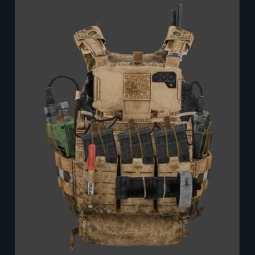 | Ferro Concepts FCPC V5 Plate Carrier (Black Division)Gilet tactique | 5 | Aramid | 198 | 6 | 5,30 kg | 2 / 6 | 68 398 ₽ |
 | Spiritus Systems LV-119 Plate Carrier (Black Division V2)Gilet tactique | 5 | Aramid | 198 | 4 | 5,10 kg | 2 / 4 | 72 385 ₽ |
 | First Spear Siege-R Optimized M.A.S.S. Plate Carrier (Black Division)Gilet tactique | 5 | Aramid | 350 | 15 | 10,80 kg | 4 / 12 | 147 225 ₽ |
 | 6B45 armored rig (General Purpose, EMR)Gilet tactique | 5 | Aramid | 364 | 12 | 4,36 kg | 4 / 9 | 81 558 ₽ |
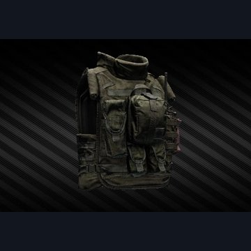 | 6B45 armored rig (Medic, EMR)Gilet tactique | 5 | Aramid | 364 | 12 | 4,50 kg | 4 / 9 | 80 558 ₽ |
 | 6B45 armored rig (Assault, EMR)Gilet tactique | 6 | Aramid | 414 | 12 | 4,30 kg | 4 / 9 | 84 558 ₽ |
 | First Spear Strandhogg plate carrier (ABUPAT)Gilet tactique | 4 | Aramid | 198 | 9 | 3,20 kg | 4 / 9 | 36 118 ₽ |
 | ANA Tactical Alpha chest rig (A-TACS AU)Gilet tactique | — | — | — | 0 | 1,70 kg | 0 / 0 | 64 322 ₽ |
 | WARTECH MK3 TV-104 chest rig (Moss)Gilet tactique | — | — | — | 0 | 1,65 kg | 0 / 0 | 36 958 ₽ |
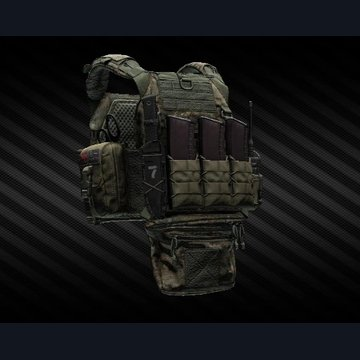 | Stich Profi Plate Carrier V2 (MARPAT Woodland)Gilet tactique | 4 | Aramid | 198 | 9 | 2,20 kg | 4 / 9 | 34 041 ₽ |
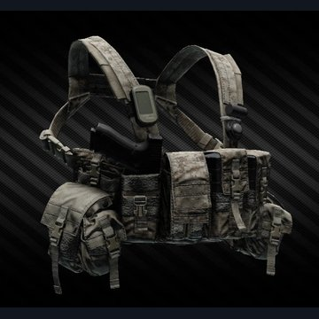 | LBT-1961A Load Bearing Chest Rig (AOR1)Gilet tactique | — | — | — | 0 | 1,36 kg | 0 / 0 | 49 000 ₽ |
 | Crye Precision JPC Plate Carrier (MultiCam)Gilet tactique | 5 | Aramid | 110 | 2 | 1,83 kg | 2 / 2 | 40 526 ₽ |
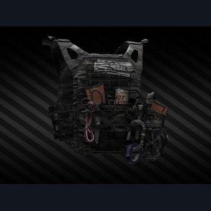 | Tac-Kek JayPC plate carrier (Black)Gilet tactique | 1 | Aramid | 180 | 2 | 1,10 kg | 2 / 2 | 16 451 ₽ |
 | Tac-Kek JayPC plate carrier (OD Green)Gilet tactique | 1 | Aramid | 180 | 2 | 1,60 kg | 2 / 2 | 19 004 ₽ |
 | Gilet tactique porte-plaque ANA Tactical M2 (MultiCam Alpine)Gilet tactique | 4 | Aramid | 206 | 10 | 2,25 kg | 4 / 8 | 51 362 ₽ |
 | Gilet tactique porte-plaques WARTECH TV-115 (noir)Gilet tactique | 3 | Aramid | 122 | 2 | 1,02 kg | 2 / 4 | 26 885 ₽ |
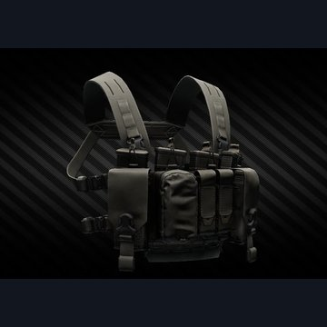 | Gilet tactique compact Direct Action Thunderbolt (Ranger Green)Gilet tactique | — | — | — | 0 | 0,62 kg | 0 / 0 | 25 160 ₽ |
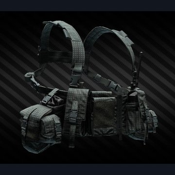 | Gilet tactique LBT-1961A (DNC)Gilet tactique | — | — | — | 0 | 1,36 kg | 0 / 0 | 38 250 ₽ |
 | Stich Profi Chest Rig MK2 (Recon, EMR)Gilet tactique | — | — | — | 0 | 1,40 kg | 0 / 0 | 32 400 ₽ |
 | LBT-1961A Load Bearing Chest Rig (MultiCam)Gilet tactique | — | — | — | 0 | 1,36 kg | 0 / 0 | 38 250 ₽ |
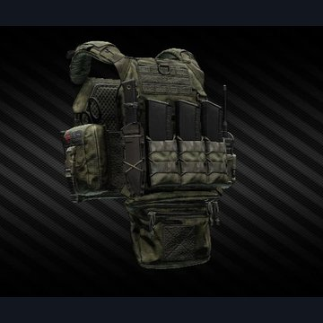 | Stich Profi Plate Carrier V2 (A-TACS FG)Gilet tactique | 4 | Aramid | 198 | 11 | 2,20 kg | 4 / 9 | 35 041 ₽ |
 | Stich Profi Plate Carrier V2 (Coyote)Gilet tactique | 4 | Aramid | 198 | 11 | 2,20 kg | 4 / 9 | 35 041 ₽ |
 | FORT Gladiator-S plate carrier (Death is Inevitable)Gilet tactique | 5 | Aramid | 440 | 15 | 7,12 kg | 4 / 12 | 106 118 ₽ |
 | FORT Gladiator-S plate carrier (Viking)Gilet tactique | 5 | Aramid | 282 | 7 | 3,05 kg | 2 / 5 | 76 270 ₽ |
 | FORT Gladiator-S plate carrier (Lightweight, MultiCam)Gilet tactique | 5 | Aramid | 270 | 6 | 2,77 kg | 2 / 4 | 68 696 ₽ |
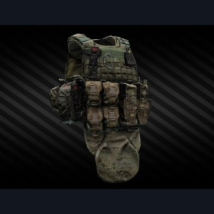 | FORT Gladiator-S plate carrier (MultiCam)Gilet tactique | 5 | Aramid | 345 | 9 | 4,83 kg | 2 / 7 | 94 803 ₽ |
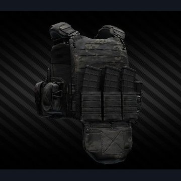 | First Spear Strandhogg plate carrier (MultiCam Black)Gilet tactique | 4 | Aramid | 198 | 7 | 3,20 kg | 4 / 9 | 36 118 ₽ |
 | Haley Strategic D3CRX Chest Harness (Black)Gilet tactique | — | — | — | 0 | 0,90 kg | 0 / 0 | 31 600 ₽ |
 | Spiritus Systems LV-119 Plate Carrier (MultiCam Black)Gilet tactique | 5 | Aramid | 198 | 4 | 5,10 kg | 2 / 4 | 72 385 ₽ |
 | ANA Tactical M2 plate carrier (A-TACS iX)Gilet tactique | 4 | Aramid | 206 | 10 | 2,25 kg | 4 / 8 | 51 362 ₽ |
 | ANA Tactical M2 plate carrier (A-TACS AU-X)Gilet tactique | 4 | Aramid | 206 | 10 | 2,25 kg | 4 / 8 | 51 362 ₽ |
 | Direct Action Thunderbolt compact chest rig (Marauder)Gilet tactique | — | — | — | 0 | 0,62 kg | 0 / 0 | 0 ₽ |
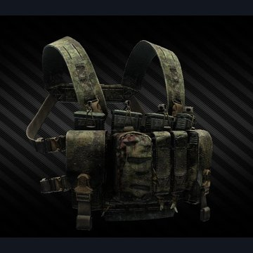 | Direct Action Thunderbolt compact chest rig (PenCott WildWood)Gilet tactique | — | — | — | 0 | 0,62 kg | 0 / 0 | 25 160 ₽ |
 | ANA Tactical M1 plate carrier (EMR)Gilet tactique | 4 | Aramid | 194 | 10 | 2,95 kg | 4 / 8 | 38 032 ₽ |
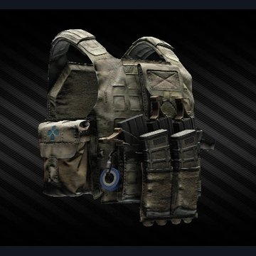 | Blue Force Gear Ten-Speed SF Chest Rig (Ranger Green)Gilet tactique | — | — | — | 0 | 0,61 kg | 0 / 0 | 0 ₽ |
 | Blue Force Gear PLATEminus V2 Plate Carrier (Wolf Gray)Gilet tactique | 2 | Aramid | 68 | 8 | 2,67 kg | 4 / 8 | 48 703 ₽ |
 | Blue Force Gear PLATEminus V2 Plate Carrier (Scourge)Gilet tactique | 2 | Aramid | 68 | 8 | 2,28 kg | 4 / 8 | 54 703 ₽ |
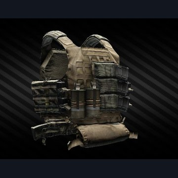 | Blue Force Gear PLATEminus V2 Plate Carrier (Coyote Brown)Gilet tactique | 2 | Aramid | 68 | 8 | 2,45 kg | 4 / 8 | 43 703 ₽ |
 | Blue Force Gear PLATEminus V2 Plate Carrier (MultiCam)Gilet tactique | 2 | Aramid | 68 | 8 | 2,41 kg | 4 / 8 | 43 703 ₽ |
 | Haley Strategic D3CRX Chest Harness (Coyote Brown)Gilet tactique | — | — | — | 0 | 0,65 kg | 0 / 0 | 9 341 ₽ |
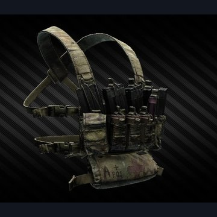 | Haley Strategic D3CRX Chest Harness (MultiCam)Gilet tactique | — | — | — | 0 | 0,65 kg | 0 / 0 | 25 250 ₽ |
 | Stich Profi Stich Defense mod.2 plate carrier (Cleanup Crew)Gilet tactique | 3 | Aramid | 155 | 10 | 3,66 kg | 4 / 9 | 64 197 ₽ |
 | Stich Profi Stich Defense mod.2 plate carrier (A-TACS FG)Gilet tactique | 3 | Aramid | 155 | 10 | 3,66 kg | 4 / 9 | 64 197 ₽ |
La capacité est un compte d'emplacements, pas un volume : deux emplacements larges valent moins qu'un espace de six emplacements étroits pour ce que vous comptez y mettre.
Ce qu’un rig accepte
Un rig peut proposer des emplacements de plaque : c'est le cas des porte-plaques, qui sont des gilets tactiques au sens de l'export. Les deux usages se combinent, et les deux se paient en poids.
| Emplacement | Pièces | Plaques autorisées | Classe maximale |
|---|---|---|---|
| Plaque arrière | 55 | 24 | 6 – 6 |
| Plaque avant | 55 | 24 | 6 – 6 |
| Plaque latérale droite | 34 | 4 | 5 – 6 |
| Plaque latérale gauche | 34 | 4 | 5 – 6 |
| back_plate | 1 | 21 | 6 – 6 |
| front_plate | 1 | 21 | 6 – 6 |
| left_side_plate | 1 | 3 | 6 – 6 |
| right_side_plate | 1 | 3 | 6 – 6 |
| Plaque | Classe | Matériau | Durabilité | Zones | Poids (kg) | Ricochet (z) | Prix de base (₽) |
|---|---|---|---|---|---|---|---|
| Plaque balistique Cult Termite | 6 | Titane | 65 | 2 | 3,85 kg | 80 % | 77 018 ₽ |
| Plaque balistique ESAPI niveau IV | 6 | Céramique | 55 | 2 | 3,20 kg | 80 % | 72 426 ₽ |
| Plaque balistique ESBI niveau IV (flanc) | 6 | Céramique | 18 | 4 | 1,15 kg | 80 % | 16 120 ₽ |
| Plaque balistique GAC 4sss2 | 6 | UHMWPE | 50 | 2 | 2,70 kg | 80 % | 85 002 ₽ |
| Plaque balistique Granit (flanc) | 6 | Céramique | 20 | 4 | 1,30 kg | 80 % | 14 521 ₽ |
| Plaque balistique Granit 4RS (arrière) | 6 | Céramique | 50 | 1 | 3,80 kg | 80 % | 49 626 ₽ |
| Plaque balistique Granit 4RS (avant) | 6 | Céramique | 55 | 1 | 3,50 kg | 80 % | 51 402 ₽ |
| Plaque balistique Granit Br5 | 6 | Céramique | 60 | 2 | 3,30 kg | 80 % | 61 955 ₽ |
| Plaque balistique KITECO SC-IV SA | 6 | UHMWPE | 45 | 2 | 2,45 kg | 80 % | 69 705 ₽ |
| Plaque balistique Kiba Arms acier | 6 | Acier de blindage | 50 | 2 | 5,10 kg | 80 % | 52 900 ₽ |
| Plaque balistique Korund-VM-K (arrière) | 6 | Céramique | 45 | 1 | 2,70 kg | 80 % | 42 641 ₽ |
| Plaque balistique NESCO 4400-SA-MC | 6 | Matériau combiné | 60 | 2 | 3,60 kg | 80 % | 68 217 ₽ |
| Plaques balistiques Korund VM-K (avant) | 6 | Céramique | 60 | 1 | 4 kg | 80 % | 53 531 ₽ |
| Plaque balistique Cult Locust | 5 | Titane | 60 | 2 | 2,56 kg | 80 % | 40 355 ₽ |
| Plaque balistique GAC 3s15m | 5 | UHMWPE | 45 | 2 | 0,97 kg | 80 % | 53 801 ₽ |
| Plaque balistique Granit 4 (avant) | 5 | Céramique | 50 | 1 | 3,05 kg | 80 % | 34 756 ₽ |
| Plaque balistique Granit Br4 | 5 | Céramique | 55 | 2 | 2,90 kg | 80 % | 39 146 ₽ |
| Plaque balistique Korund-VM (arrière) | 5 | Acier de blindage | 40 | 1 | 2,30 kg | 80 % | 26 538 ₽ |
| Plaque balistique Korund-VM (flanc) | 5 | Acier de blindage | 25 | 4 | 1,10 kg | 80 % | 7 627 ₽ |
| Plaque balistique SAPI niveau III+ | 5 | Céramique | 50 | 2 | 1,82 kg | 80 % | 37 084 ₽ |
| Plaque balistique SSAPI niveau III+ (flanc) | 5 | Céramique | 15 | 4 | 1 kg | 80 % | 8 804 ₽ |
| Plaque balistique TallCom Guardian | 5 | Matériau combiné | 55 | 2 | 3,50 kg | 80 % | 36 807 ₽ |
| Plaques balistiques Granit 4 (arrière) | 5 | Céramique | 45 | 1 | 3,30 kg | 80 % | 32 703 ₽ |
| Plaques balistiques Korund-VM (avant) | 5 | Acier de blindage | 60 | 1 | 3,40 kg | 80 % | 32 780 ₽ |
| Plaque balistique 6B23-2 (arrière) | 4 | Acier de blindage | 40 | 1 | 3,50 kg | 80 % | 11 201 ₽ |
| Plaque balistique 6B33 (avant) | 4 | Acier de blindage | 50 | 1 | 3,70 kg | 80 % | 15 207 ₽ |
| Plaque balistique Global Armor's acier | 4 | Acier de blindage | 45 | 2 | 3,40 kg | 80 % | 16 079 ₽ |
| Plaque balistique Kiba Arms titane | 4 | Titane | 55 | 2 | 2,25 kg | 80 % | 21 620 ₽ |
| Plaque balistique Monoclete niveau III PE | 4 | UHMWPE | 40 | 2 | 1,35 kg | 80 % | 18 620 ₽ |
| Plaque balistique NewSphereTech niveau III | 4 | Aluminium | 45 | 2 | 2,15 kg | 80 % | 16 842 ₽ |
| Plaque balistique SPRTN Elaphros | 4 | Céramique | 45 | 2 | 1,60 kg | 80 % | 17 254 ₽ |
| Plaque balistique SPRTN Omega | 4 | Matériau combiné | 50 | 2 | 4,39 kg | 80 % | 18 241 ₽ |
| Plaques balistiques 6B13 modifiées (arrière) | 4 | Acier de blindage | 45 | 1 | 4,10 kg | 80 % | 12 038 ₽ |
| Plaque balistique AR500 Legacy Plate | 3 | Matériau combiné | 45 | 2 | 3,85 kg | 80 % | 12 580 ₽ |
| Plaque balistique Zhuk-3 (avant) | 3 | UHMWPE | 40 | 1 | 2,40 kg | 80 % | 10 185 ₽ |
| Plaque balistique légère PRTCTR | 3 | UHMWPE | 35 | 2 | 0,43 kg | 80 % | 13 018 ₽ |
| Plaques balistiques 6B12 (avant) | 3 | Acier de blindage | 50 | 1 | 4,60 kg | 80 % | 12 418 ₽ |
| Plaque balistique Tac-Kek SAPI niveau III+ (réplique) | 1 | UHMWPE | 90 | 2 | 1,10 kg | 80 % | 4 350 ₽ |
Les porte-plaques les plus blindés sont aussi les plus lourds : le prix de la protection se règle en mobilité, pas en budget seul.
Comment s’équiper
Quatre repères pour arbitrer entre deux rigs, à partir des chiffres du catalogue.
- Compter les emplacements réels. La capacité annoncée compte les poches et les emplacements d'équipement. Une capacité de vingt-quatre sur un modèle étroit n'accueille pas les cartouches longues : la géométrie compte autant que le compte.
- Le poids se paie en raid long. Un rig de douze kilos, plus l'armure, plus les armes : la masse totale détermine la vitesse, l'ergonomie et la fatigued au bout du raid.
- Choisir la géométrie avant la capacité. Un modèle large accepte des objets volumineux ; un modèle compact garde l'ensemble manoeuvrable. Les contraintes d'emplacement dépendent de la forme du pouch, pas de sa seule taille.
- Le prix de base ne dit pas le prix payé. Le prix de base de l'export ignore les frais de marchand et la devise. Pour un rig acheté en magasin, le prix réel dépend du niveau de fidélité du marchand et de ce que le marché propose.
Sur la comparaison des rigs. Le comparateur d'armures aligne les rigs sur les mêmes colonnes que les autres pièces. Pour deux rigs de capacité équivalente, la ligne qui décide est presque toujours le poids.
Sources et limites
Les caractéristiques proviennent de l’export communautaire du 18 novembre 2026, identique dans les trois profils de jeu. Les règles de zone, de classe et de pénétration relèvent des notes de l’éditeur pour les correctifs 0.14.x. Les classements de plaques et les avis d’équipement sont signalés comme opinions et ne servent jamais de source chiffrée.
- Tarkov.dev — items, équipement, munitions et skills (PvP ; autres modes via le catalogue)Données communautaires
- Tarkov.dev — catalogue officiel des exports JSONDonnées communautaires
- Ballistics — mécanique en jeuWiki communautaire
- Escape from Tarkov WikiWiki communautaire
- Armor, plates and materials — classes, zones et réparationAnalyse communautaire
- Best Armor in Escape from Tarkov 2026 — guide d’équipementAvis communautaire
- Reddit — question sur les gilets pare-ballesAvis communautaire
- Patch 0.14.0.0 — plaques balistiques, zones d'armure et classes (27 décembre 2023)Éditeur
- Patch 0.14.6.0 — refonte de la pénétration (25 avril 2024)Éditeur
- Patch 0.15.0.0 — classes 5 et 6 retirées du marché (20 août 2024)Éditeur
- Tarkov.dev — classes d’armure, zones et matériauxDonnées communautaires
- Équipement — classes d’armure, zones et ricochetsWiki communautaire